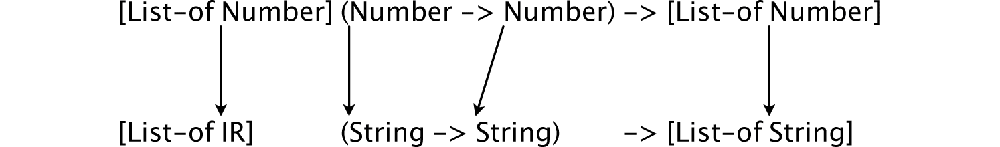
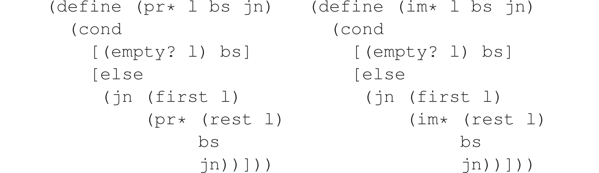
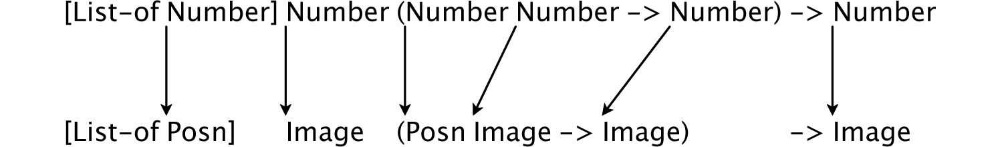

15.2 Similarities in Signatures
As it turns out, a function’s signature is key to its reuse. Hence, you must learn to formulate signatures that describe abstracts in their most general terms possible. To understand how this works, we start with a second look at signatures and from the simple—though possibly startling—insight that signatures are basically data definitions.
Both signatures and data definitions specify a class of data; the difference is that data definitions also name the class of data while signatures don’t. Nevertheless, when you write down
; Number Boolean -> String
(define (f n b) "hello world")
your first line describes an entire class of data, and your second one states that f belongs to that class. To be precise, the signature describes the class of all functions that consume a Number and a Boolean and yield a String.
In general, the arrow notation of signatures is like the List-of notation from chapter 14.3. The latter consumes (the name of) one class of data, say X, and describes all lists of X items—without assigning it a name. The arrow notation consumes an arbitrary number of classes of data and describes collections of functions.
What this means is that the abstraction design recipe applies to signatures, too. You compare similar signatures; you highlight the differences; and then you replace those with parameters. But the process of abstracting signatures feels more complicated than the one for functions, partly because signatures are already abstract pieces of the design recipe and partly because the arrow-based notation is much more complex than anything else we have encountered.
Let’s start with the signatures of cf* and names:
The diagram is the result of the compare-and-contrast step. Comparing the two signatures shows that they differ in two places: to the left of the arrow, we see Number versus IR, and to its right, it is Number versus String.
If we replace the two differences with some kind of parameters, say X and Y, we get the same signature:
; [X Y] [List-of X] -> [List-of Y]
The new signature starts with a sequence of variables, drawing an analogy to function definitions and the data definitions above. Roughly speaking, these variables are the parameters of the signature, like those of functions and data definitions. To make the latter concrete, the variable sequence is like ITEM in the definition of List-of or the X and Y in the definition of CP from chapter 14.3. And just like those, X and Y range over classes of values.
An instantiation of this parameter list is the rest of the signature with the parameters replaced by the data collections: either their names or other parameters or abbreviations such as List-of from above. Thus, if you replace both X and Y with Number, you get back the signature for cf*:
; [List-of Number] -> [List-of Number]
If you choose IR and String, you get back the signature for names:
; [List-of IR] -> [List-of String]
And that explains why we may consider this parametrized signature as an abstraction of the original signatures for cf* and names.
Once we add the extra function parameter to these two functions, we get map1, and the signatures are as follows:

Again, the signatures are in pictorial form and with arrows connecting the corresponding differences. These markups suggest that the differences in the second argument—a function—are related to the differences in the original signatures. Specifically, Number and IR on the left of the new arrow refer to items on the first argument—a list—and the Number and String on the right refer to the items on the result—also a list.
Since listing the parameters of a signature is extra work, for our purposes, we simply say that from now on all variables in signatures are parameters. Other programming languages, however, insist on explicitly listing the parameters of signatures, but in return you can articulate additional constraints in such signatures and the signatures are checked before you run the program.
Now let’s apply the same trick to get a signature for map1:
; [X Y] [List-of X] [X -> Y] -> [List-of Y]
Concretely, map1 consumes a list of items, all of which belong to some (yet to be determined) collection of data called X. It also consumes a function that consumes elements of X and produces elements of a second unknown collection, called Y. The result of map1 is lists that contain items from Y.
Abstracting over signatures takes practice. Here is a second pair:
; [List-of Number] -> Number
; [List-of Posn] -> Image
They are the signatures for product and image* in exercise 252. While the two signatures have some common organization, the differences are distinct. Let us first spell out the common organization in detail:
• both signatures describe one-argument functions; and
• both argument descriptions employ the List-of construction.
In contrast to the first example, here one signature refers to Number twice while the second one refers to Posns and Images in analogous positions. A structural comparison shows that the first occurrence of Number corresponds to Posn and the second one to Image:
To make progress on a signature for the abstraction of the two functions in exercise 252, let’s take the first two steps of the design recipe:

Since the two functions differ in two pairs of values, the revised versions consume two additional values: one is an atomic value, to be used in the base case, and the other one is a function that joins together the result of the natural recursion with the first item on the given list.
The key is to translate this insight into two signatures for the two new functions. When you do so for pr*, you get
; [List-of Number] Number [Number Number -> Number]
; -> Number
because the result in the base case is a number and because the function for the second cond line is +. Similarly, the signature for im* is
; [List-of Posn] Image [Posn Image -> Image]
; -> Image
As you can see from the function definition for im*, the base case returns an image, and the combination function is place-dot, which combines a Posn and an Image into an Image.
Now we take the diagram from above and extend it to the signatures with the additional inputs:

From this diagram, you can easily see that the two revised signatures share even more organization than the original two. Furthermore, the pieces that describe the base cases correspond to each other and so do the pieces of the sub-signature that describe the combination function. All in all there are six pairs of differences, but they boil down to just two:
1. some occurrences of Number correspond to Posn, and
2. other occurrences of Number correspond to Image.
So to abstract we need two variables, one per kind of correspondence.
Here then is the signature for fold2, the abstraction from exercise 252:
; [X Y] [List-of X] Y [X Y -> Y] -> Y
Stop! Make sure that replacing both parameters of the signature, X and Y, with Number yields the signature for pr* and that replacing the same variables with Posn and Image, respectively, yields the signature for im*.
The two examples illustrate how to find general signatures. In principle the process is just like the one for abstracting functions. Due to the informal nature of signatures, however, it cannot be checked with running examples the way code is checked. Here is a step-by-step formulation:
1. Given two similar function definitions, f and g, compare their signatures for similarities and differences. The goal is to discover the organization of the signature and to mark the places where one signature differs from the other. Connect the differences as pairs just like you do when you analyze function bodies.
2. Abstract f and g into f-abs and g-abs. That is, add parameters that eliminate the differences between f and g. Create signatures for f-abs and g-abs. Keep in mind what the new parameters originally stood for; this helps you figure out the new pieces of the signatures.
3. Check whether the analysis of step 1 extends to the signatures of f-abs and g-abs. If so, replace the differences with variables that range over classes of data. Once the two signatures are the same, you have a signature for the abstracted function.
4. Test the abstract signature. First, ensure that suitable substitutions of the variables in the abstract signature yield the signatures of f-abs and g-abs. Second, check that the generalized signature is in sync with the code. For example, if p is a new parameter and its signature is
; … [A B -> C] …
then p must always be applied to two arguments, the first one from A and the second one from B. And the result of an application of p is going to be a C and should be used where elements of C are expected.
As with abstracting functions, the key is to compare the concrete signatures of the examples and to determine the similarities and differences. With enough practice and intuition, you will soon be able to abstract signatures without much guidance.
Exercise 253. Each of these signatures describes a class of functions:
; [Number -> Boolean]
; [Boolean String -> Boolean]
; [Number Number Number -> Number]
; [Number -> [List-of Number]]
; [[List-of Number] -> Boolean]
Describe these collections with at least one example from ISL. 
Exercise 254. Formulate signatures for the following functions:
• sort-n, which consumes a list of numbers and a function that consumes two numbers (from the list) and produces a Boolean; sort-n produces a sorted list of numbers.
• sort-s, which consumes a list of strings and a function that consumes two strings (from the list) and produces a Boolean; sort-s produces a sorted list of strings.
Then abstract over the two signatures, following the above steps. Also show that the generalized signature can be instantiated to describe the signature of a sort function for lists of IRs.
Exercise 255. Formulate signatures for the following functions:
• map-n, which consumes a list of numbers and a function from numbers to numbers to produce a list of numbers.
• map-s, which consumes a list of strings and a function from strings to strings and produces a list of strings.
Then abstract over the two signatures, following the above steps. Also show that the generalized signature can be instantiated to describe the signature of the map1 function above.